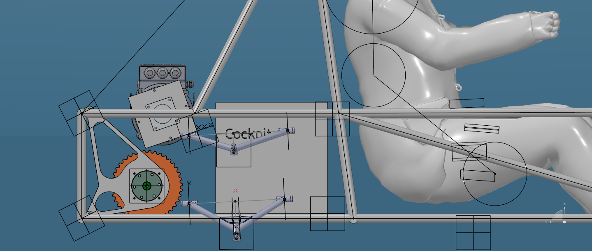

Summary
I chose the EITA-02 transmission layout and final drive ratio with a MATLAB lap-time simulator I wrote and calibrated against track tests on the EITA-01. The result is a countershaft layout with two chain stages, a decision to keep the 12.25 ratio, a sized shaft, key and bearings, and a test program that showed which events gearing can and cannot help.
Transmission design
EITA-01 used a belt from the motor to a countershaft and a chain to the differential. During manufacturing the belt went out of alignment and had to be replaced by a chain, and the tensioners on both stages were hard to adjust. For EITA-02 I compared two ways to deliver the ratio with the same WEG WTE300 motor.
A catalog planetary reducer followed by a single chain stage meant fewer parts to align. It also meant buying a reducer quoted at BRL 6,850 to 12,616 with no local supplier confirmed, designing a custom adapter flange balanced for 7,500 rpm, routing an output shaft across the car, and living with a ratio fixed by the catalog.
A countershaft with two chain stages needs only catalog chain, bearings and plates from suppliers the team already uses. It fits the packaging, and each stage can be adjusted on its own, so the ratio can still change later. The cost is bringing back the assembly risks we already know from EITA-01. I chose the countershaft, with chain on both stages for cost, ease of assembly and low tensioning needs.

Countershaft sizing (Shigley, ASME elliptic criterion)
The countershaft carries the stage 1 sprocket at 61.5 mm and the stage 2 pinion at 192.5 mm from the reference bearing, with 290 mm between bearings. At design torque the chain forces are 282.8 N on the sprocket and 998.2 N on the pinion.
A first pass assumed both chains pull in one plane. The CAD coordinates showed 101.4° between the two load planes, which lowers the resultant bending moment from 70.44 N·m to 63.70 N·m.
With a profile-milled keyseat (Kf = 2.14, Kfs = 3.00), SAE 4140 annealed (Sut = 655 MPa, Sy = 415 MPa) and n = 2.5, the minimum diameter is Ø26.80 mm. That is 1.2 mm under the Ø28 mm shaft that already ran on EITA-01.
- Key: 8 × 7 mm, DIN 6885, minimum length 4.41 mm, so the key is not the weak link.
- Bearings: SKF 6006 (30 mm bore) on both sides to simplify assembly, about 9.7× capacity margin.
- Hollow option checked: with di/do = 0.5 the outer diameter becomes Ø28.30 mm for about 22% less mass.
- Still open before manufacturing: keyseat process, the actual steel and heat treatment, and bearing data checked against the manufacturer's catalog.
Chain stages and wrap angle
Chain selection follows the Collins method: design power from the motor's rated power and service factors, then the smallest ANSI chain that passes link-plate fatigue, roller and bushing fatigue, and contact wear. The software runs this search automatically.
With the centre distances locked in CAD (167.67 mm and 187.69 mm), stage 2 has a 124.9° wrap on the pinion, above the 120° practical minimum. Stage 1 sits at 117.6°, 2.4° short. Since the geometry cannot move, I accepted that margin. Harber (2005) ran 126° at a similar speed range.
Lap-time software
A first OptimumLap batch run put the best ratio near 13. OptimumLap could not represent details of our powertrain, such as the speed ramp the CVW300 inverter imposes after launch and the WTE300 torque curve from the datasheet table. So I wrote my own tool in MATLAB, SoftwareTransmissao. It simulates Endurance, Acceleration and SkidPad, converts times into event points, checks a ramp constraint, and sizes the chain stages, shaft, key and bearings for the chosen ratio.
Solver architecture
The track comes in as straight and constant-radius segments, the same format OptimumLap exports, and becomes a curvature profile along distance. The solver computes the cornering speed limit everywhere, anchors at the lowest one (the tightest corner, where the car must be at the limit), then integrates forward using the smaller of motor force and traction, and backward for braking.
The functions for lateral grip, traction with load transfer and braking are pure physical limits with no driver factor, so the Acceleration module and the top-speed check can reuse them.
Lateral and longitudinal grip share the tyre through a friction ellipse. At each point the lateral demand is set by speed and curvature, and the longitudinal force left is
A median driver factor scales the lateral limit, because a normal lap is not driven at the tyre's limit. I calibrated it at the 95th percentile of lateral acceleration from the GPS of an Endurance test. Braking data from that session was left out: drivers had been told to brake gently to avoid current spikes in the motor.
Event modules and constraints
- Acceleration: time-domain integration. Tractive force is the smallest of motor torque, tyre grip and the inverter speed ramp, minus aerodynamic drag.
- SkidPad: point to point with a standing start, so the inverter ramp applies. With no field test yet, the driver factor is swept instead of fixed.
- Points: the Acceleration (D.9.4) and SkidPad (D.10.4) rule formulas. The Endurance formula is not published, so I estimated it by calibrating against official 2025 results.
- Ramp check: the lowest ratio that holds the car on a 6° slope at 5 m/s. The minimum is 10.58; 12.25 reaches 7.0°.
- Mechanical sizing: chain (Collins), belt, countershaft, key and bearing selection from catalogs.
Each module has its own test suite that checks physical behaviour in isolation, for example that the driver factor goes to its calibrated value on a straight and to zero at the cornering limit.
Choosing the final drive ratio across events
For each event I swept the ratio with everything else fixed and looked at time and points.
| Event or constraint | Sweep result | At current FDR 12.25 | Decides the ratio? |
|---|---|---|---|
| Acceleration (D.9.4) | Best 16.0: 10.696 s, 4.5 pts (floor) | 11.562 s, 4.5 pts | No |
| SkidPad (D.10.4) | Plateau 6.5 to 18.0: 6.060 s | 6.060 s, 42.67 pts | Weakly |
| Endurance (D.12.8) | Best 15.0: 126.232 s; plateau 13.5 to 16.0 | 126.784 s | Only on raw lap time |
| Ramp, 6° at 5 m/s | Minimum 10.58 | 7.0° | No |
Endurance alone points to 15.0, but the curve is flat: anything from 13.5 to 16.0 is within about 0.15% of the best time. Going from 12.25 to 15.0 gains 0.553 s per lap (0.44%) and needs sprockets about 10% larger on both stages, in packaging that is already tight. The gain is smaller than the model's own error on a real lap (9.8%), and no other event changes. I kept 12.25.
Testing on EITA-01
The software has free parameters, so it needed data from the real car before I could trust it. I wrote the test procedures and ran the tests with a smartphone logging GPS and accelerometer through MATLAB Mobile, plus two people timing by hand at start and finish. The manual times let me catch and discard bad sensor runs.
Acceleration test (75 m)
Five timed runs, one of them with phone telemetry. While processing it I found a bug in my launch detection: a centred moving average used future samples, so the speed step leaked backwards and the launch was flagged one or two samples early. With raw speed for that decision only, the sensor time went from 12.42 s to 11.42 s, close to the 11.86 s from the stopwatch.
With a catalog drivetrain efficiency of about 90% the model gave 10.93 s, faster than the real car. At 80% it gave 11.56 s, inside the measured range and consistent with known chain slack, misalignment and bearings mounted on flexible plates.
With the calibrated model I swept the ratio from 2 to 20 and the car mass down to 60 kg (EITA-01 is about 370 kg with driver). No combination reaches 5.739 s, the time needed to score above the minimum. The floor is about 6.8 s because available traction drops with mass. That result took Acceleration out of the ratio decision and challenged the plan to chase weight for this event. As a cross-check I ran the same equations by hand for another team's four-motor AWD car.
Endurance tests
First session: ten laps on a local track of 0.88 to 0.99 km. Two laps were planned stops (battery reading and driver change), leaving eight valid laps at an average of 111.98 s/km. The local track is straighter than the competition layout, so that pace is not comparable with official results.
Second session: a full-distance attempt, 22 laps with two drivers. The car stopped at the end of lap 6 or 7 with inverter fault F182 (output pulse feedback), and the battery voltage reading dropped from 78 V to 69 V. Cross-checking the CVW300 manual with the driver's report of losing power right after a sharp corner, the most likely cause is a loose connection between the battery and the inverter. In the points estimate, finishing Endurance is worth more than any pace gain, which is why reliability comes first in the ratio decision.
Held-out validation of the lap solver
My first check compared the simulated lap on the competition-like layout with the pace on our local track and came out 52% off. That comparison mixed model error with two different tracks, so I discarded it.
I then rebuilt the local track geometry from the GPS of one lap, recalibrated the driver factor on the other seven laps (0.34), and simulated the reserved lap: 96.6 s against 107.0 s measured, 9.8% optimistic. Two likely causes remain open. The braking friction coefficient (0.8) has never been validated by a dedicated test, and 1 Hz GPS gives one point every 8 to 10 m in corners. This is one lap, one driver and one session, so it is a first check, not a statistical validation.
Next steps
FEM of the differential mounts to close the paper, a dedicated SkidPad test to replace the estimated lateral grip, and a second held-out validation with a new test session.